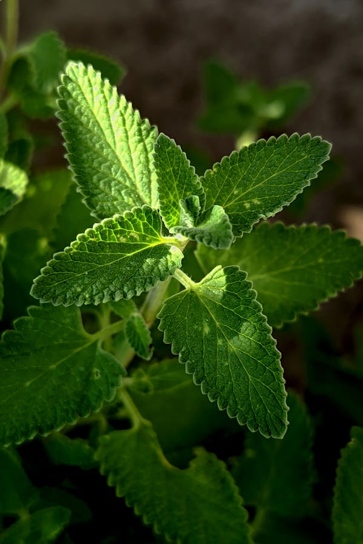
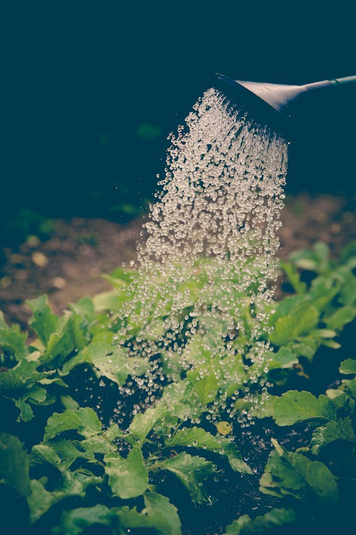
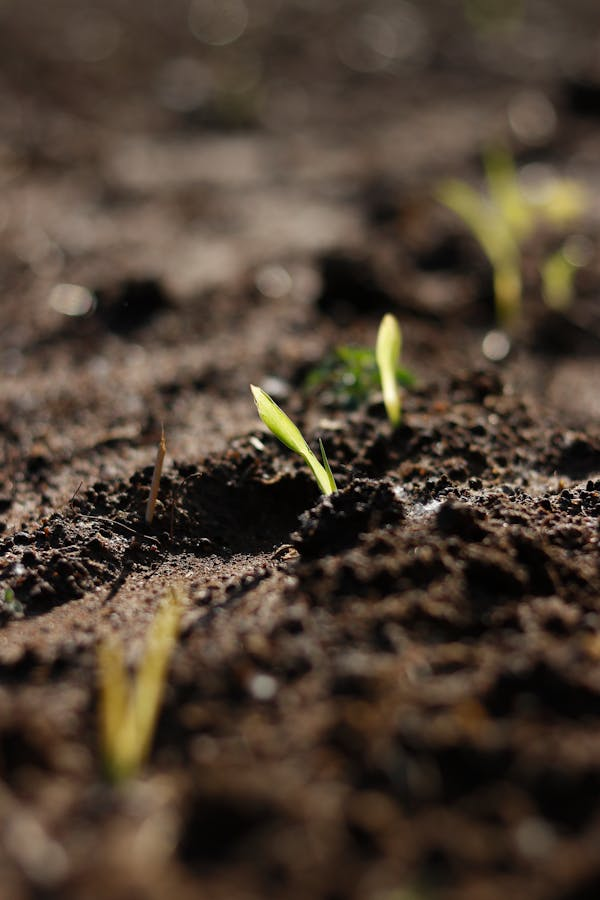
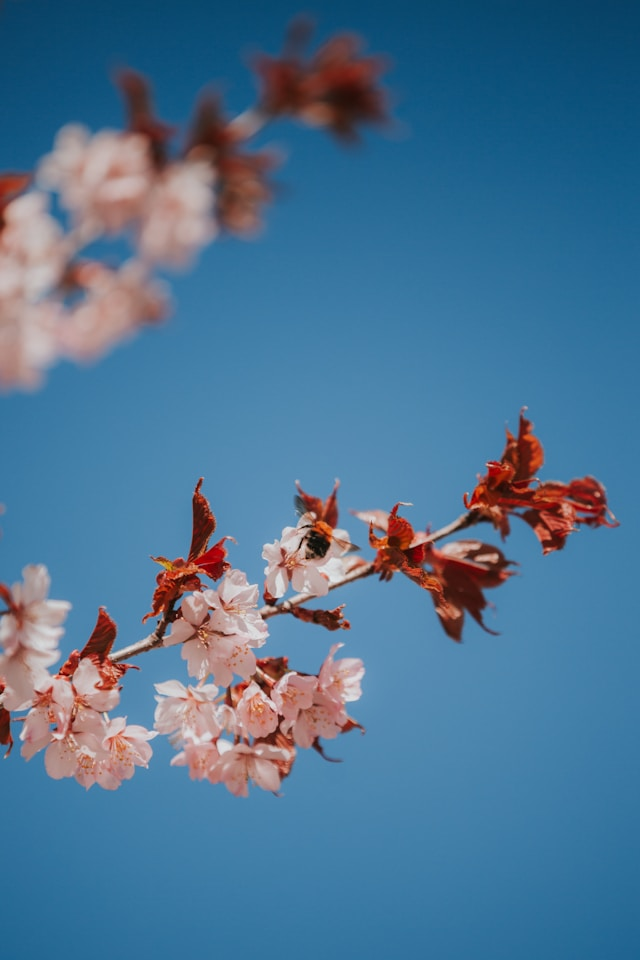
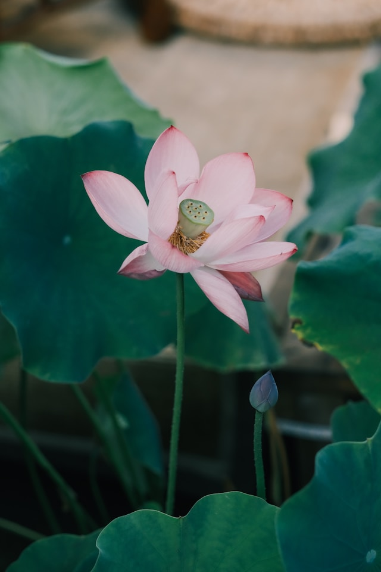
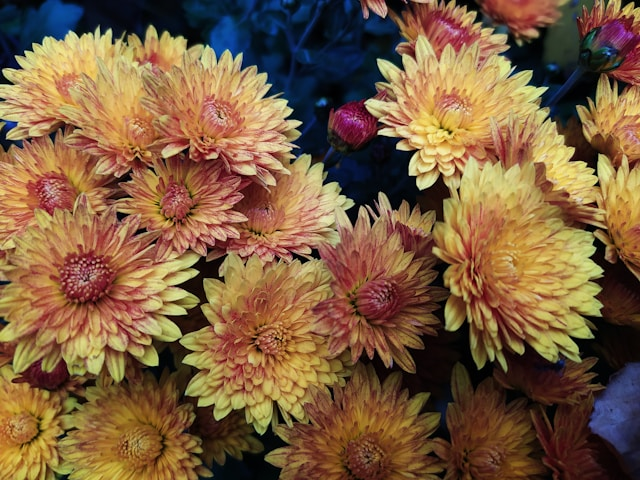

专业的花卉养护技巧，让你的花草茁壮成长






点击工具查看详细使用指南
叶片发黄主要有以下原因：1. 浇水过多或过少，导致根系受损；2. 光照不足或过强，影响光合作用；3. 缺乏养分，尤其是氮、铁元素；4. 土壤酸碱度不适；5. 病虫害侵袭。可根据实际情况调整养护方式。
防止烂根的关键：1. 选择排水良好的土壤和带排水孔的花盆；2. 遵循"见干见湿"的浇水原则，避免盆内积水；3. 夏季高温时加强通风，减少土壤湿度；4. 定期松土，增加土壤透气性；5. 施肥时避免浓肥直接接触根系。
施肥频率：1. 生长季（春夏季）每2-3周施肥一次；2. 休眠期（冬季）停止施肥；3. 开花前增施磷钾肥，促进花芽分化；4. 观叶植物以氮肥为主，观花植物以磷钾肥为主；5. 新买的花卉适应环境后再施肥。
判断方法：1. 手指插入土壤2-3厘米，感觉干燥再浇水；2. 观察叶片，轻微萎蔫表示需要浇水；3. 掂花盆重量，明显变轻表示缺水；4. 使用土壤湿度计测量；5. 不同花卉需水不同，多肉植物需干透再浇，蕨类植物需保持湿润。